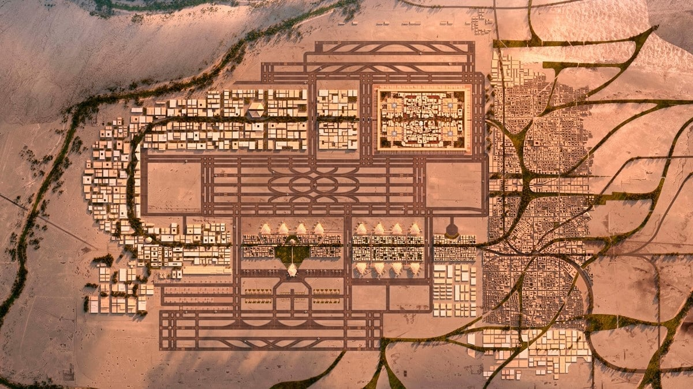
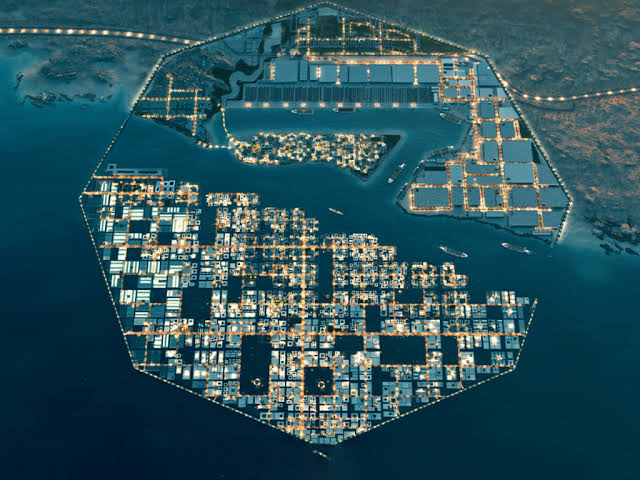
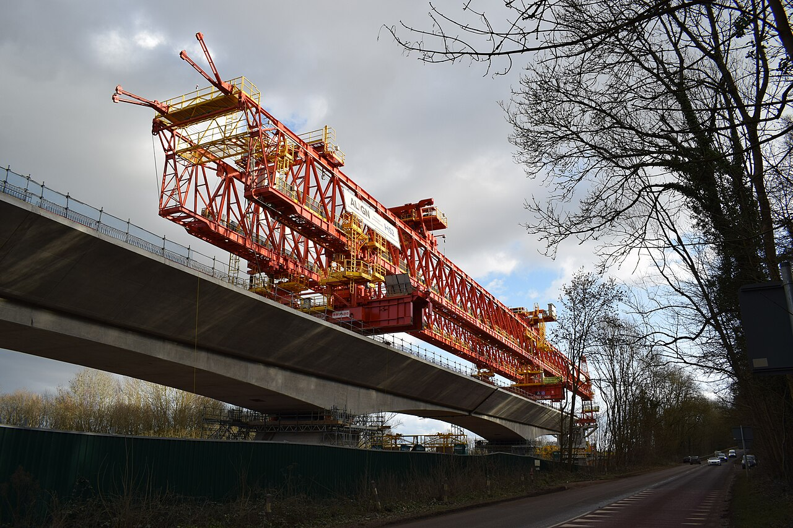
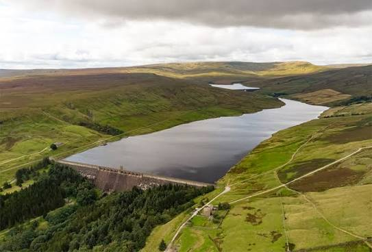

⬡
Digital Strategy & BIM Execution
BIM strategies and execution plans that align client objectives, standards and the realities of delivery — from tender through design to construction.
BIM Management & Digital Delivery
Christos Kofidis is a Chartered Senior BIM Manager leading information management on some of the world's largest infrastructure programmes, turning standards, models and data into reliable decisions on site and at board level.
About
Christos is a Chartered Construction Manager (MCIOB) with an MEng in Civil & Structural Engineering and more than 15 years' experience in BIM and digital construction, applied on major live programmes in the UK, the Middle East and Greece.
His career spans aviation, national high-speed rail, nuclear new build, water infrastructure and new-city development. Across these sectors the objective is the same: the right information, for the right people, in a form they can act on.
He believes effective information management should be largely invisible to the teams it serves: coordination runs smoothly, reviews are timely and nothing is missed. Achieving this requires a clear strategy, consistent standards and the systematic automation of repetitive tasks.
Expertise
BIM strategies and execution plans that align client objectives, standards and the realities of delivery — from tender through design to construction.
CDE workflows, naming and metadata standards, audits and compliance, implemented to support delivery rather than add administration. Proven at certification audit.
Federated model management, clash detection and visual walkthroughs that identify design conflicts well before they reach site.
Constructability reviews supported by 4D simulation, point clouds and as-built verification, keeping the model aligned with site conditions.
Workflow automation, data-validation applications and live dashboards that reduce manual effort and deliver six-figure annual savings, including BIM-to-GIS integration.
Building and mentoring multidisciplinary BIM teams, delivering training and workshops, and embedding good practice across large stakeholder groups.
Playbook
Outcomes from live programmes, anonymised to protect client confidentiality.
Designed a review-distribution system connecting forms, email, task boards and BI dashboards for more than 40 reviewers across seven disciplines, replacing manual tracking and saving over $100k a year.
Built self-service web applications that check model element attributes against the project's component catalogue, saving more than £200k in labour and making quantity take-off data reliable.
Led the adoption of cloud-based federated models across an entire programme, setting the standard for other teams. The models he managed consistently recorded the highest number of active users.
Created automated workflows that extract model registers directly from the CDE and issue them to every task team weekly. The approach was adopted as the programme-wide standard.
Programmes
Programmes Christos has helped deliver, shown with publicly available imagery only. The rotating wireframes are original abstractions and contain no project data.

One of the world's largest aviation programmes, planned with six runways. Christos leads BIM strategy and execution end to end: standards, coordination, audits and the information that supports decision-making.

A new generation of cities on the Red Sea, from a 170 km linear city to Oxagon, the octagonal port city shown above. He reviewed digital delivery across sectors and developed automation that saved six figures a year.

Britain's new high-speed railway. He led a ten-person digital team on one of its major sections, delivering reality-capture digital twins, 4D constructability reviews and an ISO 19650 certification audit with no non-conformances.
Photo: OtisVR · CC BY-SA 4.0 · Wikimedia Commons · Colne Valley ViaductThe UK's first nuclear new build in a generation, where the world's largest crane lifts reactor domes into place. He produced construction-stage models and clash coordination for its most safety-critical structures.

Where his BIM career began: parametric Revit families, Dynamo automation for lifting design and the delivery of his own schemes, including clarifiers, detention tanks and rising mains.
Journey
International aviation programme, Middle East. Responsible for BIM strategy and execution end to end: standards, coordination, audits, training and data-driven reporting.
New-city development, Middle East. Digital delivery reviews across sectors, standards development and automation delivering six-figure annual savings.
National high-speed rail programme, UK. Led a ten-person digital team delivering reality-capture digital twins, 4D constructability reviews and an ISO 19650 certification audit with no non-conformances.
Nuclear new-build programme, UK. Construction-stage models, clash coordination and as-built analysis for some of the most safety-critical structures in Europe.
Water infrastructure frameworks, UK. Parametric design and Dynamo automation, progressing to leading his own delivery schemes on site.
Civil and structural engineering and geomatic surveying in Greece and the UK, the foundation for his later work in digital engineering.
Workshop
Christos develops in-house tools for BIM and GIS delivery. The summaries below describe, at a high level, how each one works and the value it delivers. The tools are not distributed, and the projects, clients and data they support remain confidential.
Applies one consistent review standard to every design team in a single automated run.
Consistent, repeatable reviews across building and infrastructure models.
Links model quantities to the bill of quantities, item by item.
Cost and model data that reconcile.
Makes model content and quantities available to stakeholders without authoring software.
Package-level insight accessible to the whole team.
Enables construction sequence reviews without specialist software.
Sequencing reviewed as part of routine coordination.
Brings design models and as-built records into GIS through a consistent, repeatable process.
A GIS that remains aligned with the models.
Shows which models are mapped, which are out of date and which are missing.
GIS and model records kept in step.
Measures how design reviews influence the design.
Review effort focused where it adds most value.
Toolbox
Insights
Articles on information management, automation and the people side of BIM.
How to apply the standard so that it supports delivery rather than adding administrative burden.
How automated attribute validation turns model data into a trusted source of information for the programme.
How geospatial context changes the way stakeholders use a federated model, and how to integrate the two effectively.
Available for consulting, speaking engagements and collaboration on digital construction, worldwide.
// ADVISORY & SOLUTIONS
Christos Kofidis is a Chartered Construction Manager (MCIOB) and MEng engineer leading digital delivery on giga-projects in Riyadh. He also advises organisations internationally on the systems behind effective digital construction and develops the automation that supports them.
Custom scripts and add-ins that automate model checking, data validation and synchronisation across the software environment.
Designing Common Data Environments (CDE), information requirements (EIR/AIR) and BIM Execution Plans (BEP) for major capital projects.
Upskilling delivery teams, carrying out model federation health checks and reducing project risk before client submission.
30-minute technical scoping call · remote, worldwide
This site uses lightweight, anonymous analytics to measure performance. No tracking cookies are used.
Client, employer and project-document details are withheld under confidentiality — only methods and outcomes are shown.